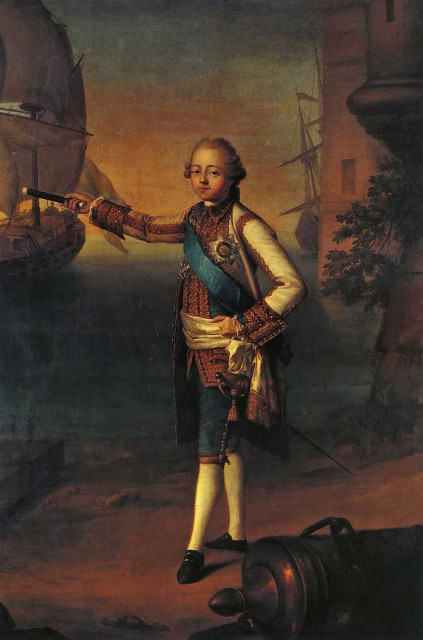

Галерные мои дела несколько застопорились по причине непроясненности некоторых фактов и деталей. Чтобы не тратить журнальное время впустую, продолжу рассказ о нашем родном флоте, начатый с эпохи Азовского флота Петра I.
Флот российский за свою историю повидал и испытал многое. Были славные дни в периоды правления Петра и Екатерины, бывали и иные времена. О том, как командовал флотом император Павел I, вспоминает адмирал А.С.Шишков…
Чтобы было понятно, какое отношение имел к этому событию Александр Семенович Шишков, несколько слов о его карьере с началом правления Павла. Вот как об этом пишет сам будущий адмирал:
«Император возвратился из Москвы (после коронации g._g.); и вскоре после того приносят ко мне приказ, что я определен в звание эскадр-майора, при особе его величества. Это меня крайне удивило, так что я не знал радоваться ли тому или печалиться. С одной стороны должность быть при особе государя льстила мне, а с другой — отпуск мой уничтожился, слабость здоровья моего устрашала меня и притом самое название сие, как некое новое и никогда небывалое, погружало меня в некоторое беспокойное сомнение и неизвестность. Я поехал тотчас к графу Кушелеву, дабы о сем наведаться. От него узнал я, что эскадр-майор и флаг-капитан (как прежде называли) есть одно и тоже; что должность моя — быть при государе и повеления его изъявлять флагами, когда он пойдет на море и будет распоряжать флотом. При возражениях моих, что я в отпуску и болен, советовал он мне об этом молчать и сколько можно, хотя чрез силу, исполнять возложенную на меня обязанность. Нечего делать, — принужден я был снова вступить в службу.»
А теперь, собственно, о самом походе.
 |
| Делапьер Никола Бенжамен. Портрет цесаревича Павла Петровича в адмиральском мундире. 1769 (кликабельно) |
«Государь сбирался идти на построенном вновь фрегате „Эмануиле" в Ревель. Для сего вооружалась в Кронштадте эскадра, с которою долженствовала соединиться другая, вооружаемая в Ревеле. Мне велено было съездить к адмиралу Василию Яковлевичу Чичагову с предложением, чтоб он принял начальство над сими двумя эскадрами; но он от сего отказался, сказав, что он, при крайней слабости своего здоровья, и притом почти лишенный зрения, — не в силах принять на себя сей обязанности. После сего, адмирал Александр Иванович Круз на такое же сделанное ему предложение, отвечал, что хотя он также слаб здоровьем и почти без ног, однакож готов, по возможности сил своих, исполнить волю его величества.»
Сделаем некоторые замечания к данному абзацу.
Сначала о флагманском фрегате «Эммануил». Известно, что Павел Петрович, будучи великим князем, одновременно являлся и генерал-адмиралом. Это звание (оно же и должность) – высшее в русском флоте того времени, присваивалось только шесть раз: Ф.М. Апраксину (1708), А.И.Остерману (1740; лишен звания в 1741); М.М. Голицину (1756; младшему из братьев М.М. Голицыных); великому князю Павлу Петровичу (1762, в восемь лет.); великому князю Константину Николаевичу (1831, в четыре года) и великому князю Алексею Александровичу (1883). Сподвижники Петра I Ф.А. Головин и Ф.Я. Лефорт также были объявлены генерал-адмиралами, но тогда, пожалуй, это было не звание, а должность.
Павел I, вступив на престол 6 ноября 1796 года, сохранил за собой звание генерал-адмирала и приказал построить для себя яхту «Эммануил». Известный ленинградский знаток и исследователь морской истории А.Л.Ларионов в своей статье «Из истории императорских яхт российского флота» (Гангут, № 22-24) считает, что от Павла поступило указание корабельному мастеру Кутыгину сделать внутреннее убранство как можно скромнее, вооружить его по типу 44-пушечного фрегата и везде в дальнейшем именовать фрегатом. На самом деле «Эммануил», длина которого составляла 130 футов (39,6 м), ширина – 38 футов (11,6 м), имел 40 пушек, но с 1789 г., когда в Российском флоте был введен ранг 44-пушечных фрегатов, все фрегаты, имевшие от 40 до 46, а затем и более орудий, числились 44-пушечными.
Насчет убранства фрегата мнения противоречивые. В отличие от А.Л.Ларионова отдельные наши морские историки считают обстановку на фрегате «шикарной» и ссылаются при этом на мемуары графини В.Н. Головиной. Вот этот отрывок из ее «Воспоминаний» они, видимо, имеют в виду:
Немного спустя после Петергофского праздника Император отплыл в Ревель. Императрица, хотя и была три месяца беременной, пожелала принять участие в путешествии. Нелидова и Протасова сопровождали ее. Великая Княгиня и многочисленная свита из мужчин последовали за их Величествами. Император и лица, наиболее приближенные к нему, поместились на фрегате «Эммануил», рассчитанном на большое общество, и с такой роскошью, какую трудно было ожидать встретить на корабле. Этот фрегат входил в состав эскадры, где на других кораблях была размещена остальная свита.
(Головина Варвара Николаевна «Мемуары», Глава седьмая. 1797—1799)
Но это могло быть и просто первыми впечатлениями графини, ожидавшей увидеть грубые балки и доски корабля, а встретившей красное дерево и кожу адмиральского салона. Впрочем, Варвару Николаевну больше интересовали другие картины во время плавания:
Однажды после обеда м-ль де Ренн, фрейлина Великой Княгини Анны, дожидаясь Великих Княгинь, растянулась на маленьком диване в гостиной фрегата. Г-н де ... (виртембергский посланник) вошел туда, а м-ль де Ренн приняла более сдержанное положение, на что он сказал ей:
— О, очень жаль! Поза была превосходна.
(Там же).
Здесь уже и диван в «гостиной» не «шикарный», а маленький.
Фрегат строился очень быстро. Заложенный 26 января 1797 года, уже 16 июня этого же года он был спущен на воду. Но что не сделаешь ради его величества! Мы уже писали, что галеру могли построить даже за 24 часа, лишь бы была на это высочайшая воля.
Чтобы не возвращаться более к фрегату, несколько слов о дальнейшей его судьбе. В 1798 «Эммануил» участвовал в практическом плавании эскадры в Балтийском море. В 1799 и 1800 стоял на Петергофском рейде. 30.6 и 6.7.1801 на Кронштадтском рейде фрегат дважды посетил император Александр I. Летом 1805 с гардемаринами на борту совершил практическое плавание в Балтийском море. В сентябре 1805 в составе эскадры адмирала Е. Е. Тета участвовал в переброске экспедиционного корпуса генерала П. А. Толстого из Кронштадта в Померанию. В 1809 и 1810 гг. с эскадрой выходил на Кронштадтский рейд для защиты о-ва Котлин. Участвовал в Отечественной войне 1812 и в войне с Францией 1813–1814. В 1813 с отрядом блокировал Данциг. В 1814 занимал брандвахтенный пост в Кронштадте. Разобран в 1825 в Кронштадте. Имеются сведения, что в дальнейшем (1830?) оставшиеся от «Эммануила» части были проданы Греции.
Но вернемся к рассказу А.С. Шишкова.
«Таким образом, для начальства над кронштадтскою эскадрою, назначены были адмиралы Круз и Петр Иванович Пущин. В Ревеле же главный над эскадрою начальник был вице-адмирал Алексей Васильевич Мусин-Пушкин. С прочищением льда и наступлением весны, фрегат „Эмануил" и прочие приготовленные для кампании корабли вышли из кронштадтской гавани на рейд. Слабость здоровья моего требовала, чтоб я заблаговременно отправился в Ораниенбаум, или попросту в Раибов, дабы хотя несколько дней пожить там и подышать весенним воздухом.»
Особенность всех произведений адмирала А.С. Шишкова – присутствие множества мелких деталей, не относящихся вроде был к главной теме рассказа, но выбросишь их – что-то существенное теряется. Иногда даже создается впечатление, что именно в этих подробностях главное достоинство адмиральских записок. Причем, именно эти детали оказываются в истории наиболее живучими, так как характеризуют они неизменность нашей с вами психологии. Поэтому не буду изымать из текста абзац, который следует дальше в рассказе:
«Я остановился в доме, не доезжая ворот, при которых стояла гауптвахта. Часто, по утрам и вечерам, иногда в день раз двадцать, то по надобности, то для прогулки, случалось мне проходить в сии ворота. Всякий раз меня останавливают и вопрошают: кто я? и куда иду? — Не могши никак избавиться от сих вопросов, и крайне наскуча ими, пришло мне однажды в голову идти не в самые ворота, но подле них, в ущелину развалившейся ограды. Те ж самые часовые смотрят на меня, идущего мимо их и молчат. С тех пор всегда я тут проходил, без всяких от них вопросов. Вот, думал я, к чему служат шлагбаумы! Вся польза их состоит в том, чтоб обременить солдат обязанностью беспокоить проходящих и проезжающих.»
Не напоминает ли этот рассказ классический пример с часовым, который проверял пропуск Ленина?
И чтобы уже окончательно добить читателя нелепостью ситуации, Шишков снабжает слово шлагбаум таким примечанием:
Немецкое слово шлагбаум, по точному переводу, значит бить бревном. Подлинно многих и меня самого однажды чуть не убили. Некто рассказывал нам, что ему из Арзамаса в Петербург всякий год пригоняли стадо гусей, и поеле тож делали, да только в половину против прежнего числа. Он спросил: для чего так мало? — Ему отвечали, что из деревни гоняют их всегда прежнее число, да дорогою на всяком шлагбауме убивает по гусю.
Как началось плавание под императорским штандартом и что из этого вышло – в следующий раз.